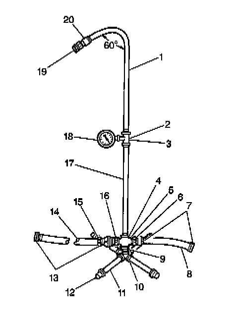
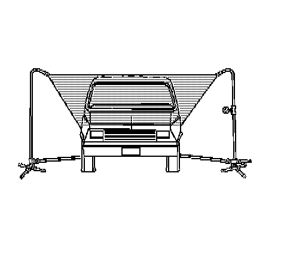
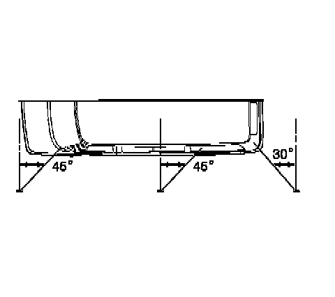

Waterleak Test Preparation
Waterleak Test Preparation
* GM vehicles are designed to operate under normal environmental conditions.
* The design criteria for sealing materials and components takes into consideration the sealing forces required to withstand the natural elements. These specifications cannot take into consideration any artificial conditions, i.e., high pressure car washes.
* The water leak test procedure has been correlated to the natural elements and will determine the ability of a vehicle to perform under normal operating conditions.
* The first step in diagnosing a leak is determining the conditions under which a leak occurs. If the general leak area can be found, the exact entry point can be isolated using a water hose or an air hose. Some trim panels or components may need to be removed in order to repair the leak.
* If leaks are found around a door, door window, rear compartment lid or liftgate area this does not necessarily indicate a bad weatherstrip. An adjustment to these areas may resolve the condition.
Watertest Stand Assembly

1 - Pipe (0.5 x 36 in)
2 - Reducing Tee, Right Stand Only (0.5 x 0.5 x 0.25 in)
3 - Coupling, Left Stand Only, (0.5 in)
4 - Tee, Left Stand Only (0.5 in)
5 - Cross, Right Stand Only (0.5 in)
6 - Pipe to Hose Nipple, Right Stand Only (0.5 in)
7 - Female Hose Coupling (5/8 in)
8 - Input Hose, Right Stand Only (2.0 ft) (5/8 in diameter)
9 - Close Nipple (0.5 in)
10 - Cross (0.5 in) with Weld-On Cap (0.5 in)
11 - Nipple (0.5 x 12 in)
12 - Cap (0.5 in)
13 - Female Hose Coupling (5/8 in)
14 - Cross Hose (12 ft) (5/8 in diameter)
15 - Hose Quick Connect
16 - Pipe to Hose Nipple (0.5 in)
17 - Pipe (0.5 x 60 in)
18 - Water Pressure Gage, Right Stand Only
19 - Full Jet Spray Nozzle, No. 1/2GG-25 or Equivalent
20 - Coupling (0.5 in)
1. Assemble the water test stand as shown.

2. Position the stands as shown.
The water spray from the stands should overlap the vehicle as shown.
3. Have an assistant inside of the vehicle during the test in order to locate any leaks.
4. The water pressure at the nozzle should maintain a 155 kPa (22 psi), for at least 4 minutes.

5. In order to check the windshield, aim the water spray 30 degrees down and 45 degrees toward the rear.
Aim the water towards the corner of the windshield.
6. In order to check the side windows for leaks, position the water stand towards the center of the rear quarter, aiming the water spray 30 degrees down and 45 degrees toward the rear.
7. In order to check the back window, aim the water spray 30 degrees down and 30 degrees toward the front.